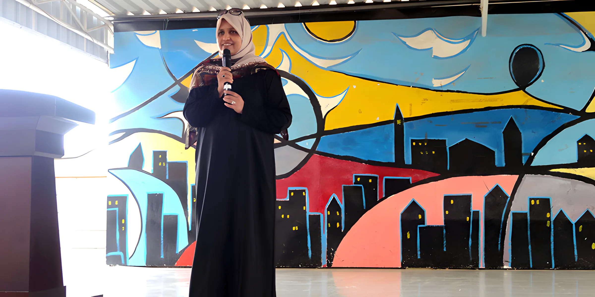
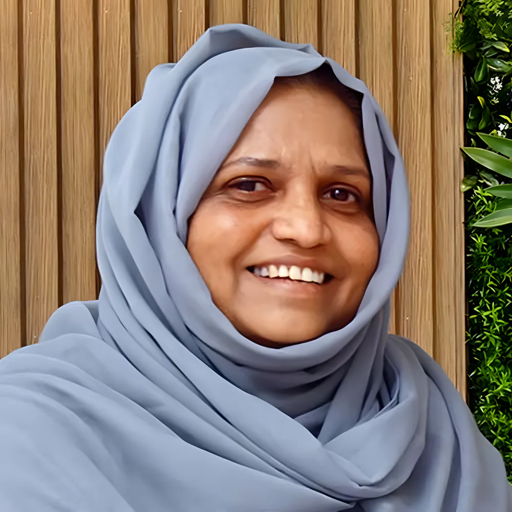

A nursery in Al Ain
Mrs Tanveer Arshad founds Al Ain Juniors Nursery. Primary, secondary and senior secondary levels follow, one grade each year.
Al Ain Juniors began in 1989 as a nursery licensed by the Ministry of Social Affairs. It added primary, secondary and senior secondary one grade a year, and today runs two curricula under one Trade, MOE and Chamber of Commerce licence.

Mrs Tanveer Arshad founds Al Ain Juniors Nursery. Primary, secondary and senior secondary levels follow, one grade each year.
The first phase of our building in the city's school zone is finished and the British school moves in. A year later the second phase opens, the Indian system moves across, and our first Grade 12 batch sits its board exams in 2004.
In ADEC's first inspections in November 2012, Al Ain Juniors was one of only a handful of Al Ain schools to receive the A band for teaching standards.
Zakher Private School, British Division, opens in 2008, and Excel International School in 2022. Together they form the AJ Group of Schools.

Rated Good by ADEK, with ADEK Awards for Best Parental Engagement and the Standardized Benchmark Award in 2024.
The Executive Management also serve as the Board of Governors of AJ Group of Schools.

Managing Director and founder
Founded Al Ain Juniors Nursery in 1989. Her vision, shared by her family and colleagues, drove the school's growth and still drives the group's.
Chairman
An engineer from Bangalore who came to the UAE in 1981 and spent about 30 years with WED and TRANSCO in Al Ain, heading water projects, before retiring in 2009.

Principal
"My emphasis is on a dynamic blend of scholastic and co-scholastic achievements."
That's how we describe the students we hope to send out: young people who set good goals in education, morality, attitude, ethics and values, and keep a love of learning for life.
Call the office to arrange a visit. Meet the team and see the classrooms, labs and library in person.